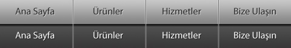
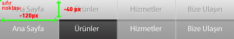

Daha önce resimli menü yapımını anlatmıştım. http://www.fatihhayrioglu.com/css-ile-menu-olusturmak-v-resimli-menuler/ ancak burada şöyle bir sorun ile karşılaştık; Bu makalede anlattığımız yöntem ile genel bir metot anlatarak tüm resimli menüler için şablon niteliğinde bir kod ürettik, yani tüm menüler bu kod ile üretilebilir(yatay, dikey, iki satır vb.) tabi bu kodumuzu biraz daha fazlalaştırdı ve karıştırdı. Ancak bir çok sefer biz sadece yatay ve tek sıralı bir resimli menü yapıyoruz bu kadar koda ihtiyacımız yok. İlgili makalenin yorumlarında da gördüğümüz gibi bir çok insan konuyu anlamakta güçlük çekiyor bende bu nedenle sadece yatay menülere örnek kısa bir kod ve örnek yaparak konuya açıklık getirmek istedim.
Daha önceki makalemdede belirttiğim gibi bu menü ardalan kaydırma yöntemi ile yapılmış bir menüdür. CSS'in bize kazandırdığı en büyük avantajlardan biridir ardalan konumunu istediğimiz gibi ayarlamak.
Bu metot ile tek resim kullandığımız için optimizasyon içinde bize büyük avantaj sağlar. 5 elemanlı bir resimli menüde her bir eleman için tek tek resim oluşturduğumuzda sayfa nette açılırken her bir resim için istek yapılacaktır, buda sayfanın yavaş açılmasına neden olacaktır. Bu metotta ise tek resim yüklenecek ve bu bize performans kazandıracaktır.
Çok basit bir xhtml kodu var. Birçok menü örneğinde olduğu gibi ul kodu;
<ul class="menu"> <li
id="mAnasayfa">Ana Sayfa
Menümüzün resimlerini tek bir resim dosyası olarak hazırlayacağız. Biz burada normal ve fare imleci üzerine geldiğindeki halini(:hover) koyduk ama bunlara seçili ve tıklama durumlarınıda eklenebilir.

Şimdi CSS kodlarımızı yazalım.
ul için genel sıfırlama kodlarımızı yazalım
ul.menu{ margin:0; padding:0;
list-style:none; width:480px; height:40px; }
Sırasız listelerin her nesnesini(li) yan yana dizmek için float:left tanımını yapmalıyız.
ul.menu li{ float:left; }
Linkler için genel tanımlarımızı yapalım
ul li a{ display:block; width:120px;
height:40px; text-indent:-9999px; outline:none; text-decoration:none; background:url(images/basit_resimli_menu.jpg) 0 0 no-repeat; }
Her bir menü nesnesinin yukarıdaki resimdeki konumunu belirlemeye geldi sıra.
li#mAnasayfa a{background-position:0 0;}
li#mUrunler a{background-position:-120px 0;} li#mHizmetler a{background-position:-240px 0;} li#mBizeUlasin a{background-position:-360px 0;}
Basit bir şekilde resimli bir menü oluşturduk. Tabi buna birde fare üzerine geldiğindeki durumu ekleyerek daha belirgin bir hale getirebiliriz.
li#mAnasayfa a:hover{background-position:0
-40px;} li#mUrunler a:hover{background-position:-120px -40px;} li#mHizmetler a:hover{background-position:-240px -40px;} li#mBizeUlasin a:hover{background-position:-360px -40px;}
Örneği görmek için tıklayınız
Not: Ardalan konumu belirleme

Sistem yukarıdaki mantık ile yürür. Genişliği ve yüksekliği belli olan alanın genel resimdeki konumunu belirterek menümüzü oluşturduk. Yukarıdaki örnek resimde "Ürünler"in fare üzerine geldiğindeki(:hover) görüntüsünü elde etmek için resimdeki konumu yukarıdan -40px, soldan -120px olarak atamalıyız. Ardalan konumu belirlerken resmin sıfır noktası sol üst köşesidir, bu nedenle değerler eksi(-) değer alır.
Kaynaklar
- http://www.webdesignerwall.com/tutorials/advanced-css-menu/
- http://superfluousbanter.org/archives/2004/05/navigation-matrix-reloaded/
- http://www.3point7designs.com/blog/2006/07/24/accessible-css-roll-over-images/
- http://simplebits.com/notebook/2003/09/30/accessible_imagetab_rollovers.html
- http://inobscuro.com/tutorials/read/19/
- http://dragan.yourtree.org/blog/en/2007/04/10/pure-css-rollover-menu/
- http://www.webvamp.co.uk/blog/coding/css-image-rollovers/
- http://www.codeitred.com/2008/08/12/apple-style-menu-tutorial-css-sprites
Comments !